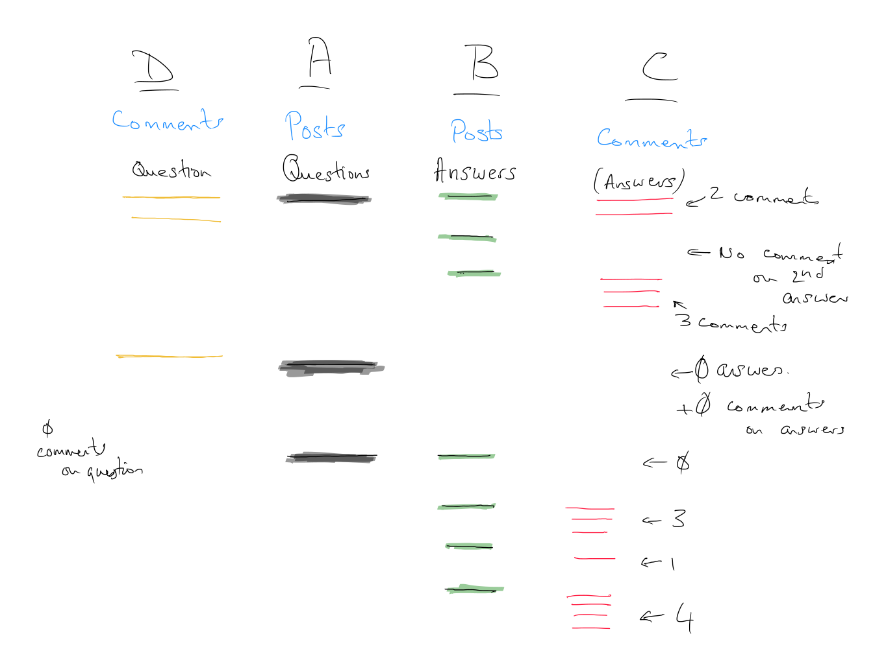

Consider the following simple example of Posts and Comments.

The second column - column A - shows the questions. There are 3.
The Answers column - column B - shows the answers corresponding to each question. Each answer is a green line.
Column C shows the comments associated with each Answer. Each comment for answer is red.
Finally, column D is show on the left to connect it to the Questions. This column shows the comments that are associated with each question. Each comment here is colored yellow.
Our ultimate goal is to (LEFT) JOIN the Posts table with itself and then with Comments and again with Comments.
The idea is that we will start with a tuple for each question. For one question, we will combine this tuple with the tuples in Posts for all of the answers to this question.
A.Id = B.ParentIdLet’s call this table StepAB
For Question 1, we will have 3 tuples corresponding to the 3 answers. The Question 1 tuple will be repeated 3 times to be combined with these 3 answer tuples.
For Question 2, there are no answers. The tuple for the second set of Posts columns will be all NULL values.
Next, we combine all of these tuples with the tuples from Comments. However, we don’t want all possible combinations. Instead, we want the tuples from StepAB to be combined with the tuples in Comments that correspond to the Answer part of the StepAB tuple. For this, we want
B.Id = C.PostIdWe call this StepABC.
The tuple for Question 1 x Answer 1 will be repeated 2 times since there are 2 comments for Answer 1.
The tuple for Question 1 x Answer 2 will be padded with NULL values for the Comments as there is no comment for Answer 2.
Lastly, we want to have comments that were on a given question. This will again, be a combination of all the corresponding tuples in StepABC with the corresponding comments. We (LEFT) JOIN StepABC with Comments, this time with
A.Id = D.PostIdWe will now do this explicitly with SQL commands. I’ll show the SQL, but I run it in R as it prints the results much better than sqlite3’s terminal does, even with
.headers on
.mode tabsIt doesn’t align the NULL values well.
If you want to play along with this, you can download the sample database.
You can also download the following files: + Posts.csv + Comments.csv + setup.sql - SQL code to create the database
If these files are in the same directory, you can run the shell command to start sqlite3
sqlite3 test
.read setup.sql
.exitSELECT *
FROM Posts AS p1
LEFT JOIN Posts AS p2
ON p1.Id = p2.ParentId
ORDER BY p1.Id; Posts (Questions) Posts (Answers)
------------------------- ----------------------
Id Type ParentId Label Id Type ParentId Label
1 1 1 Q1 2 2 1 A1
2 1 1 Q1 3 2 1 A2
3 1 1 Q1 4 2 1 A3
4 2 2 1 A1 NA NA NA <NA>
5 3 2 1 A2 NA NA NA <NA>
6 4 2 1 A3 NA NA NA <NA>
7 11 1 Q2 NA NA NA <NA>
8 21 1 Q3 22 2 21 A4
9 21 1 Q3 23 2 21 A5
10 21 1 Q3 24 2 21 A6
11 21 1 Q3 25 2 21 A7
12 22 2 21 A4 NA NA NA <NA>
13 23 2 21 A5 NA NA NA <NA>
14 24 2 21 A6 NA NA NA <NA>
15 25 2 21 A7 NA NA NA <NA>Note that we have Answers in the Questions part (first 4 columns) of the result. We could remove these by keeping only the tuples with p1.Id = 1.
We might also consider using ParentId IS NULL to identify questions as a question doesn’t have a ParentId.
SELECT *
FROM Posts AS p1
LEFT JOIN Posts AS p2
ON p1.Id = p2.ParentId
WHERE p1.Type = 1
ORDER BY p1.Id; Posts (Questions) Posts (Answers)
------------------------ ----------------------
Id Type ParentId Label Id Type ParentId Label
1 1 1 Q1 2 2 1 A1
2 1 1 Q1 3 2 1 A2
3 1 1 Q1 4 2 1 A3
4 11 1 Q2 NA NA NA <NA>
5 21 1 Q3 22 2 21 A4
6 21 1 Q3 23 2 21 A5
7 21 1 Q3 24 2 21 A6
8 21 1 Q3 25 2 21 A7Next, we perform a LEFT JOIN with Comments on the answers
SELECT *
FROM Posts AS p1
LEFT JOIN Posts AS p2
ON p1.Id = p2.ParentId
LEFT JOIN Comments AS c1
ON p2.Id = c1.PostId
WHERE p1.Type = 1
ORDER BY p1.Id;We should have + 6 tuples corresponding to Q1 + 1 tuple corresponding to Q2 + 9 tuples corresponding to Q3
Posts (Questions) Posts (Answers) Comments (Answer)
------------------------ ---------------------- -----------------
Id Type ParentId Label Id Type ParentId Label Id PostId NAME
1 1 1 Q1 2 2 1 A1 3 2 cA1
2 1 1 Q1 2 2 1 A1 4 2 cA1
3 1 1 Q1 3 2 1 A2 NA NA <NA>
4 1 1 Q1 4 2 1 A3 5 4 cA3
5 1 1 Q1 4 2 1 A3 6 4 cA3
6 1 1 Q1 4 2 1 A3 7 4 cA3
7 11 1 Q2 NA NA NA <NA> NA NA <NA>
8 21 1 Q3 22 2 21 A4 NA NA <NA>
9 21 1 Q3 23 2 21 A5 9 23 cQ3A2_1
10 21 1 Q3 23 2 21 A5 10 23 cQ3A2_2
11 21 1 Q3 23 2 21 A5 11 23 cQ3A2_3
12 21 1 Q3 24 2 21 A6 12 24 cQ3A3_1
13 21 1 Q3 25 2 21 A7 13 25 cQ3A4_1
14 21 1 Q3 25 2 21 A7 14 25 cQ3A4_2
15 21 1 Q3 25 2 21 A7 15 25 cQ3A4_3
16 21 1 Q3 25 2 21 A7 16 25 cQ3A4_4SELECT *
FROM Posts AS p1
LEFT JOIN Posts AS p2
ON p1.Id = p2.ParentId
LEFT JOIN Comments AS c
ON c.PostId = p2.Id
LEFT JOIN Comments AS c2
ON c2.PostId = p1.Id
WHERE p1.Type = 1
ORDER BY p1.Id; Comments Comments
Posts (Questions) Posts (Answers) (Answer) (Question)
------------------------ ---------------------- ----------------- -------------
Id Type ParentId Label Id Type ParentId Label Id PostId NAME Id PostId NAME
1 1 1 Q1 2 2 1 A1 3 2 cA1 1 1 cQ1
2 1 1 Q1 2 2 1 A1 3 2 cA1 2 1 cQ2
3 1 1 Q1 2 2 1 A1 4 2 cA1 1 1 cQ1
4 1 1 Q1 2 2 1 A1 4 2 cA1 2 1 cQ2
5 1 1 Q1 3 2 1 A2 NA NA <NA> 1 1 cQ1
6 1 1 Q1 3 2 1 A2 NA NA <NA> 2 1 cQ2
7 1 1 Q1 4 2 1 A3 5 4 cA3 1 1 cQ1
8 1 1 Q1 4 2 1 A3 5 4 cA3 2 1 cQ2
9 1 1 Q1 4 2 1 A3 6 4 cA3 1 1 cQ1
10 1 1 Q1 4 2 1 A3 6 4 cA3 2 1 cQ2
11 1 1 Q1 4 2 1 A3 7 4 cA3 1 1 cQ1
12 1 1 Q1 4 2 1 A3 7 4 cA3 2 1 cQ2
13 11 1 Q2 NA NA NA <NA> NA NA <NA> 8 11 cQ2
14 21 1 Q3 22 2 21 A4 NA NA <NA> NA NA <NA>
15 21 1 Q3 23 2 21 A5 9 23 cQ3A2_1 NA NA <NA>
16 21 1 Q3 23 2 21 A5 10 23 cQ3A2_2 NA NA <NA>
17 21 1 Q3 23 2 21 A5 11 23 cQ3A2_3 NA NA <NA>
18 21 1 Q3 24 2 21 A6 12 24 cQ3A3_1 NA NA <NA>
19 21 1 Q3 25 2 21 A7 13 25 cQ3A4_1 NA NA <NA>
20 21 1 Q3 25 2 21 A7 14 25 cQ3A4_2 NA NA <NA>
21 21 1 Q3 25 2 21 A7 15 25 cQ3A4_3 NA NA <NA>
22 21 1 Q3 25 2 21 A7 16 25 cQ3A4_4 NA NA <NA>